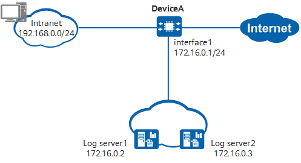

Example for Sending Session Logs in Syslog Format to Third-Party Log Servers
Networking Requirements
As shown in Example for Sending Session Logs in Syslog Format to Third-Party Log Servers, DeviceA is deployed on the network border. The network environment is as follows:
- A NAT policy in PAT mode is configured on DeviceA to perform the address and port translation for packets that access the Internet from the internal network.
- There are two third-party log servers on the network.
DeviceA is required to send session information generated when intranet users access the Internet to the log servers in syslog format. Therefore, the administrator can view and analyze session information on a log server. The log concurrent function is required, so that each log can be sent to both log servers.

In this example, interface1 represents 10GE0/0/1.

Configuration Roadmap
This example provides only the configuration on DeviceA. For details about how to configure a third-party log server, see the product document of the server.
The system time must be set correctly during the initial configuration. Changing the system time during device running will result in incorrect timestamps in historical logs. The time zone of a log server must be the same as that of the device.
- Configure an IP address for an interface.
- Configure a NAT policy.
- Configure log hosts.
- Enable session logging.
Procedure
- Configure an IP address for an interface. The following uses the interface connecting the device to SecoManager as an example.
# Configure an IP address for 10GE0/0/1.
<HUAWEI> system-view [DeviceA] interface 10ge 0/0/1 [DeviceA-10GE0/0/1] undo portswitch [DeviceA-10GE0/0/1] ip address 172.16.0.1 24 [DeviceA-10GE0/0/1] quit
- Configure a NAT policy.
# Configure NAT address pool 1 and set the mode to PAT. In this example, the public IP address ranges from 192.0.2.10 to 192.0.2.15.
[DeviceA] nat address-group add1 [DeviceA-address-group-add1] mode pat [DeviceA-address-group-add1] section 0 192.0.2.10 192.0.2.15 [DeviceA-address-group-add1] route enable [DeviceA-address-group-add1] quit
# Configure a NAT policy.
[DeviceA] nat-policy [DeviceA-policy-nat] rule name policy1 [DeviceA-policy-nat-rule-policy1] source-address 192.168.0.0 24 [DeviceA-policy-nat-rule-policy1] action source-nat address-group add1 [DeviceA-policy-nat-rule-policy1] quit [DeviceA-policy-nat] quit
- Configure log hosts.
[DeviceA] firewall log host 1 172.16.0.2 514 [DeviceA] firewall log host 2 172.16.0.3 514
- Enable the log concurrent function and set the source IP address and port number for sending logs.
[DeviceA] firewall log session multi-host-mode concurrent [DeviceA] firewall log source 172.16.0.1 6000
- Set the output format of session logs to syslog.
[DeviceA] firewall log session log-type syslog
- Enable session logging.
# Enable session aging logging.
[DeviceA] firewall log session aging enable
# Enable NAT session logging.
[DeviceA] firewall log session nat enable
- Configure third-party log servers and view logs on them.
Configuration Scripts
# sysname DeviceA # firewall log source 172.16.0.1 6000 firewall log host 1 172.16.0.2 514 firewall log host 2 172.16.0.3 514 firewall log session multi-host-mode concurrent firewall log session log-type syslog firewall log session aging enable firewall log session nat enable # nat address-group add1 0 mode pat route enable section 0 192.0.2.10 192.0.2.15 # interface 10GE0/0/1 ip address 172.16.0.1 255.255.255.0 # nat-policy rule name policy1 source-address 192.168.0.0 mask 255.255.255.0 action source-nat address-group add1 # return